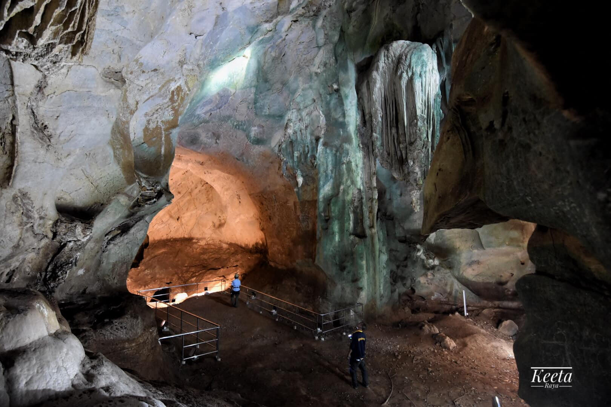

ถ้ำศิลป์

ถ้ำศิลป์ ตั้งอยู่หมู่ที่ 2 ตำบลหน้าถ้ำ จังหวัดยะลา ในภูเขาเดียวกันกับถ้ำพระนอน โดยอยู่ไม่ไกลจากวัดคูหาภิมุข แต่ห่างจากถ้ำ พระนอนไปทางหัวเขาทิศใต้ประมาณ 1.5 กิโลเมตร ถ้ำศิลป์อยู่ห่างจากตัวเมืองยะลาไปตามทางหลวงหมายเลข 409 แยกเข้าถ้ำศิลป์ประมาณ 10 กิโลเมตร
การเดินทางใช้เส้นทางเดียวกับวัดคูหาภิมุข แต่ต้องเดินทางต่อไปอีก 2 กิโลเมตร เป็นถนนลาดยางจนถึงเชิงเขา มีบันไดให้นักท่องเที่ยวเดินขึ้นไปยังปากถ้ำได้โดยสะดวก (ปากถ้ำสูงจากเชิงเขา สูง 28 เมตร) แต่ต้องเดินทางต่อไปอีกราว 1 กิโลเมตร มีแยกซ้ายไปอีก 1 กิโลเมตร ผ่านโรงเรียนบ้านถ้ำศิลป์ ไปเล็กน้อยด้านซ้ายมือมีทางเดินเล็ก ๆ ไปยังภูเขาริมถนน มีบันไดขึ้นไปยังปากถ้ำซึ่งสูงจากพื้นดิน 28 เมตร
ภายในถ้ำมืดมาก มีภาพจิตรกรรมเก่าแก่บนผนังถ้ำ แต่ลบเลือนไปมากแล้ว เป็นภาพพระพุทธเจ้าปางต่าง ๆ และมีรูปผู้หญิงยืนเป็นหมู่สามคน เป็นภาพเขียนสมัยศรีวิชัยตอนปลาย ประมาณพุทธศตวรรษที่ 19-20 การชมถ้ำต้องนำตะเกียงหรือไฟฉายไปด้วย ศาสตราจารย์ศิลป พีระศรี และอาจารย์เขียน ยิ้มศิริ นักโบราณคดีได้ สัณนิษฐานว่า ภาพเขียนสีเหล่านี้เป็นฝีมือสกุลช่างท้องถิ่น ที่ไดรับอิทธิพลด้านรูปแบบของภาพโดยตรงจากอินเดีย
จุดเด่นของถ้ำศิลป์อยู่ที่ภายในถ้ำมีจตรกรรมฝาผนัง โดยมีทั้งภาพที่เขียนสมัยก่อนประวัติศาสตร์เป็นภาพคนล่าสัตว์ เขียนด้วยสีดำ และจิตรกรรมฝาผนังภาพพระพุทธเจ้าปางมารวิชัย ภาพพระพุทธเจ้าประทับนั่ง เป็นแถวเบื้องซ้ายและขวา มีสาวกหรือาจจะเป็นอุบาสกอุบาสิกานั่งประนมมืออยู่ พระพุทธเจ้าปางลีลาและมีรูปผู้หญิงยืนเป็นหมู่สามคน ส่วนสีที่เขียนเป็นสีดินเหลือง เป็นหลัก ซึ่งประกอบด้วยสีน้ำตาลและแดง เพื่อแยกน้ำหนักอ่อนแก่ และตัดเส้นด้วยสีดำ แต่สภาพของจิตรกรรมฝาผนังภายในถ้ำค่อนข้างลบเลือนตามกาลเวลา จิตรกรรมฝาผนังที่ถ้ำศิลป์นี้ ได้รับการยกย่องว่ามีอายุเก่าแก่ที่สุดในประเทศไทย และเป็นงานศิลปกรรมสมัยศรีวิชัยชิ้นเดียวที่เป็นภาพจิตรกรรม
นักท่องเที่ยวหรือผู้สนใจเข้าเยี่ยมชมถ้ำแห่งนี้ที่มีคุณค่าทางศิลปกรรม โดยสามารถเข้าเยี่ยมชมได้ทุกวัน ไม่มีวันหยุด และไม่เสียค่าธรรมเนียมในการเข้าชมแต่อย่างใด เพียงแจ้งความจำนงต่อครูใหญ่โรงเรียนบ้านบันนังลูวาที่อยู่ใกล้ถ้ำ ซึ่งเป็นผู้เก็บรักษากุญแจประตูถ้ำ
ภาพโดย Keeta Raya
ย้อนกลับ